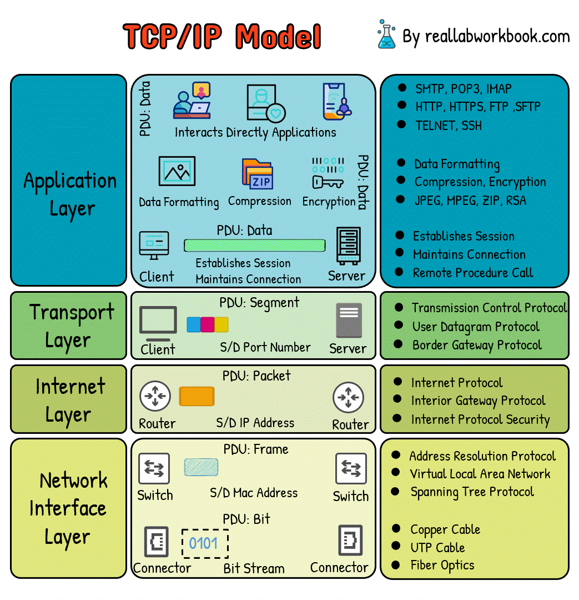

Home ｜
World Wide Web｜
TCP/IP｜
Web Browsers｜
Web Servers｜
Uniform Resource Locator｜
Domain Name Server｜
Hypertext Transfer Protocol｜
Intranet｜
Extranet｜
File Transfer Protocol｜
Hypertext Mark-up Language｜
Web 1.0｜
Web 2.0｜
Web 3.0｜
Web 4.0｜
TCP/IP
Transmission Control Protocol/Internet Protocol
It is a layered framework that explains how data is communicated between devices over a network using standardized protocals.
IP handels addressing by assigning unique numeric addresses so data packets reach the machine.TCP ensure reliable delivery by breaking data into numbered packets, sending them, resembling them in order.

- Application layer;HTTP,FTP,DNS,SMTP
- Transport layer;Reliable delivery, flow control
- Internet layer;IP addressing, rouuting packets across networks
- Network Access layer;Ethernet, Wi-Fi, physical transmission